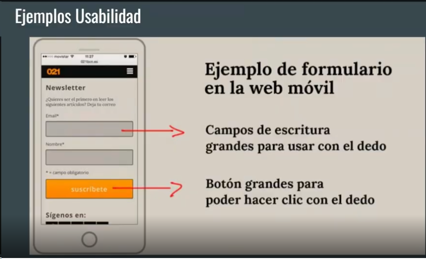
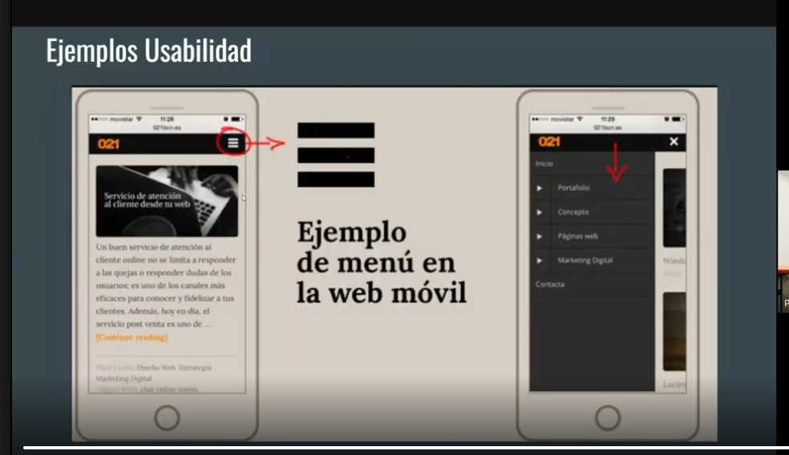
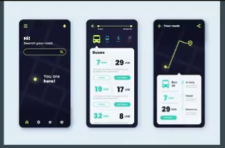
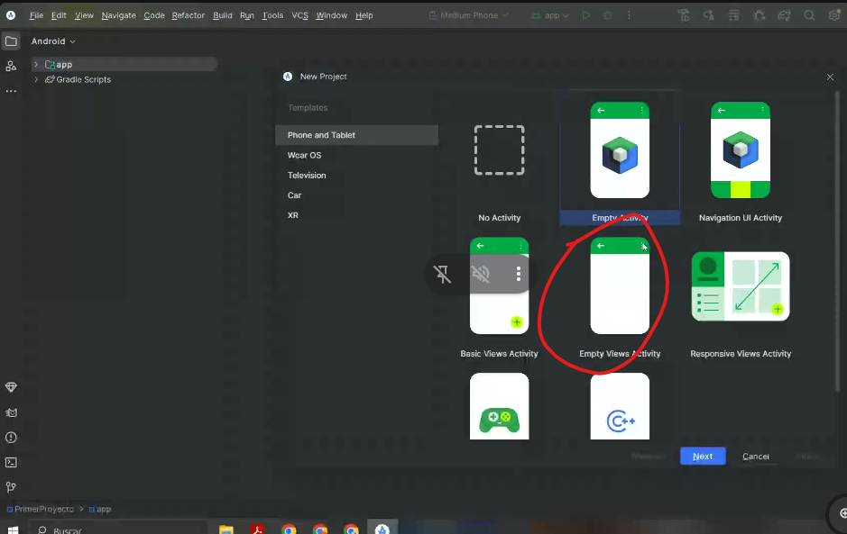
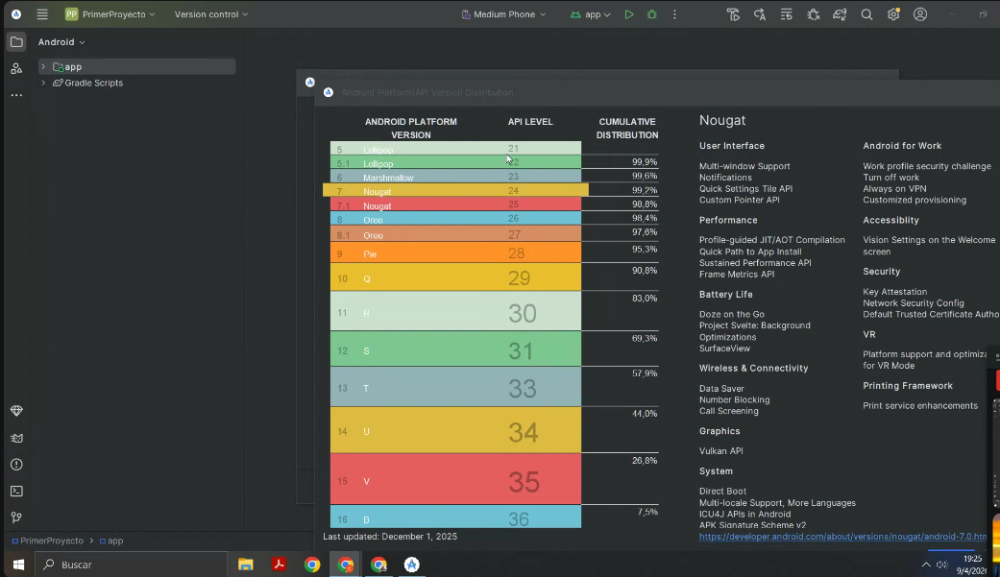

Desarrollo de Aplicaciones Moviles
Etapa 1
Corresponde a la semana 1
Definición
Una aplicación móvil es el software en un dispositivo portátil (similar a los programas en una computadora de escritorio).
Desarrollar una aplicación supone un proceso que abarca múltiples etapas, desde la conceptualización hasta la publicación.
A lo largo de este tema estudiaremos: - Definición de apps móviles - Elementos del desarrollo - Tipos de aplicaciones - Etapas del desarrollo - Criterios de elección
|
Note
|
Preguntas clave:
|
¿Qué es una aplicación móvil?
El teléfono celular transformó la forma en que usamos el software.
Hoy, muchas actividades que antes se realizaban en computadoras se ejecutan en dispositivos móviles.
|
Important
|
Las aplicaciones móviles no son algo nuevo, pero su crecimiento se debe a:
|
Una aplicación móvil es software optimizado para dispositivos móviles.
Diferencias con web: - Deben instalarse - Acceden a hardware - Están optimizadas para pantallas pequeñas
Etapas del desarrollo
El desarrollo de una app puede comenzar desde cero o adaptarse desde una web.
|
Tip
|
Mobile First: diseñar primero para móviles. |

Etapas: - Conceptualización - Definición - Diseño - Desarrollo - Publicación
Elementos del desarrollo
Plataforma
Una plataforma combina hardware y software.
Tipos: - Hardware: arquitectura (x86, ARM) - Software: sistema operativo
Ejemplos: - Android - iOS - Windows - Linux - MacOS
Tipos de aplicaciones móviles
Existen tres tipos principales:
Aplicaciones nativas
-
Desarrolladas para una plataforma específica
-
Alto rendimiento
-
Acceso completo al dispositivo
Desventajas: - Mayor costo - Desarrollo duplicado
Aplicaciones híbridas
-
Multiplataforma
-
Un solo código base
Desventajas: - Menor rendimiento - Acceso limitado a hardware
Aplicaciones web
-
Se ejecutan en navegador
-
No requieren instalación
Desventajas: - Dependen de internet - No acceden completamente al dispositivo
Comparación
| Tipo | Ventajas | Desventajas |
|---|---|---|
Nativas |
Alto rendimiento<br>Acceso completo al hardware |
Mayor costo<br>Desarrollo múltiple |
Híbridas |
Multiplataforma<br>Menor costo |
Menor rendimiento |
Web |
Fácil desarrollo<br>Bajo costo |
Limitaciones<br>Dependencia de internet |
Cómo elegir una app
Depende de:
-
Público objetivo
-
Tiempo disponible
-
Rendimiento requerido
-
Presupuesto
|
Important
|
Antes de desarrollar: - Definir funcionalidades - Analizar usuarios - Evaluar costos |
Ciclo de vida de una app
El ciclo de vida abarca desde la idea hasta el retiro.

Etapas: 1. Inicio 2. Diseño 3. Desarrollo 4. Pruebas 5. Implementación
Inicio del proyecto
Se define la idea.
Aspectos clave: - Ventaja competitiva - Integración - Valor al usuario - Uso en dispositivos móviles
Diseño
Se define la experiencia de usuario (UX) y la interfaz (UI).
Incluye: - Prototipos - Wireframes - Diseño visual
Desarrollo
-
Implementación técnica
-
Frontend
-
Backend
Pruebas
Tipos: - Prototipo - Alfa - Beta - Versión candidata
Objetivo: - Detectar errores - Mejorar calidad
Implementación
Publicación en tiendas.
Incluye: - Distribución - Actualizaciones - Seguimiento
Consideraciones del desarrollo móvil
Comunes
-
Multitarea
-
Fragmentación
-
Recursos limitados
iOS
-
Restricciones estrictas
-
Entorno controlado
Android
-
Gran variedad de dispositivos
-
Permisos configurables
Documentar una app
La documentación: - Organiza el proyecto - Evita pérdida de conocimiento
Metodología ágil: - Planificación - Diseño - Ejecución - Pruebas - Lanzamiento

Plantilla de planificación
| Actividad | Descripción |
|---|---|
Entorno de estudio |
Contexto del proyecto |
Objetivo del proyecto |
Meta principal |
Procesos |
Flujos del sistema |
Factibilidad |
Operativa, técnica y económica |
Stakeholders |
Interesados |
Roles |
Responsabilidades |
Historias de usuario
Campos:
-
ID
-
Rol
-
Funcionalidad
-
Resultado
-
Escenario
-
Criterios de aceptación
-
Contexto
-
Evento
-
Resultado esperado
Glosario
Capacitor
Permite convertir apps web en apps móviles.
Framework
Conjunto de herramientas para desarrollo.
Gestor de paquetes
Administra dependencias (npm, yarn).
JavaScript
Lenguaje principal de la web.
SDK
Herramientas para desarrollo en una plataforma.
Software multiplataforma
Software que funciona en múltiples sistemas.
Resumen
Documentar una app permite entender, mantener y mejorar el software. Se utilizan metodologías ágiles con sprints iterativos: planificación, diseño, ejecución, pruebas y lanzamiento.
La planificación define objetivos, procesos, factibilidad, stakeholders y roles. Las historias de usuario describen funcionalidades desde la visión del usuario y guían el desarrollo.
Ejemplo: app de reservas de hotel con procesos como reserva, cancelación, check-in y check-out.
Roles típicos: líder, diseñador, programador y tester. Stakeholders: usuarios, equipo y responsables del proyecto.
Conceptos clave: framework, SDK, JavaScript, software multiplataforma, open source y gestor de paquetes.
Etapa 2
Corresponde a semana 2 y 3
Introducción
En esta semana se trabajan dos ejes centrales:
-
Sistemas de diseño.
-
Usabilidad: pruebas y evaluaciones.
El objetivo es comprender cómo se diseña una app desde sus primeras definiciones, cómo se organiza su interfaz y por qué la usabilidad y la accesibilidad son claves en la experiencia del usuario.
TEMA I. Sistemas de diseño
Diseñar una aplicación implica pensar su funcionamiento, su aspecto visual y la forma en que las personas van a interactuar con ella.
Los dos pilares principales de este tema son:
-
El diseño, entendido desde la usabilidad, la accesibilidad y la experiencia de usuario.
-
El prototipado, como herramienta para visualizar, probar y ajustar ideas antes del desarrollo final.
Este enfoque ayuda a mejorar la calidad del producto desde la conceptualización hasta su implementación.
Introducción a los sistemas de diseño
Las aplicaciones móviles nativas deben respetar ciertas características propias de cada sistema operativo.
-
Android utiliza Material Design.
-
iOS utiliza las Human Interface Guidelines de Apple.
Aunque ambos sistemas comparten algunos principios, cada uno tiene convenciones específicas que conviene respetar.
¿Qué es el diseño de apps o aplicaciones móviles?
El diseño de apps consiste en:
-
Estructurar la navegación.
-
Organizar funcionalidades.
-
Definir características visuales.
Es una etapa previa al desarrollo que permite ordenar la información y garantizar una buena experiencia de usuario.
Diseño UX y UI
La experiencia de usuario (UX) busca generar valor en la interacción con la aplicación.
Objetivo:
-
Experiencia significativa
-
Relevante
-
Placentera
El diseño de interfaces (UI) se enfoca en lo visual y es un proceso iterativo basado en feedback.
Principios UX
1. No me hagas pensar
El diseño debe ser claro, evidente y fácil de entender. Evitar dudas del usuario.
2. Ley de Fitts
El tiempo para interactuar depende de:
-
Tamaño del elemento
-
Distancia
En mobile: priorizar zonas accesibles con el pulgar.
3. Ley de Hick
Más opciones = más tiempo de decisión.
-
Reducir opciones
-
Dividir procesos
-
Simplificar formularios
4. Ley de Jakob
Los usuarios prefieren interfaces similares a las que ya conocen.
-
Mantener patrones conocidos
-
Evitar innovación innecesaria
5. Ley de Miller
La memoria es limitada.
-
No sobrecargar
-
Agrupar contenido
6. Efecto Von Restorff
Lo diferente destaca y se recuerda más.
7. Efecto Zeigarnik
Se recuerdan más tareas incompletas.
8. Ley de la región común
Elementos agrupados se perciben como relacionados.
Usabilidad
La usabilidad es la facilidad de uso.
Incluye:
-
Eficacia: errores
-
Eficiencia: tiempo
-
Satisfacción: experiencia
Depende del usuario y contexto.
|
Note
|
Un diseño es usable solo para usuarios y contextos específicos. |
Componentes de calidad (Segun Jakob Nielsen):
Jakob Nielsen dice que hay 5 componentes de calidad que todo producto debería tener cuando se está hablando de usabilidad:
-
Aprendizaje: qué tan fácil es aprender a usar el producto.
-
Eficiencia: qué tan eficiente es el producto para realizar las tareas que se le pide.
-
Memoria: qué tan fácil es recordar cómo utilizar el producto sin tener que pasar por la curva de aprendizaje de nuevo.
-
Errores: qué tan fácilmente te ayuda a salir el producto de los errores.
-
Satisfacción: qué tan contentos están los usuarios con el producto.
Accesibilidad
La accesibilidad implica que todos puedan usar el sistema.
Considera:
-
Discapacidades
-
Idioma
-
Contexto
-
Tecnología
Puede requerir:
-
Versiones adaptadas
-
Diferentes idiomas
Relación entre usabilidad y accesibilidad
Ambas buscan que el usuario pueda hacer mejor uso del software.
-
Accesibilidad → permite acceder
-
Usabilidad → mejora la experiencia
Diseño UI
Se enfoca en lo visual.
Características:
-
Intuitivo: El diseño UI busca que los usuarios comprendan fácilmente cómo interactuar con el producto digital, utilizando elementos visuales claros y coherentes.
-
Usable: Se centra en facilitar la navegación y la realización de tareas dentro del producto, asegurándose de que la experiencia sea fluida y eficiente.
-
Interactivo: Incorpora elementos interactivos que permiten al usuario realizar acciones y recibir retroalimentación instantánea, mejorando así la experiencia de uso.
-
Impactante: Busca crear interfaces atractivas y memorables, utilizando una combinación adecuada de colores, formas, tipografía y elementos visuales que generen un impacto visual positivo.
-
Funcionalidad sobre estética: Aunque el diseño UI se preocupa por la estética, su principal enfoque es en la funcionalidad. Es importante que el diseño satisfaga las necesidades y expectativas de los usuarios para que el producto sea exitoso, más allá de su apariencia visual.
Conceptos de diseño UI
Metodologías:
-
Mejora progresiva
-
Degradación agraciada
-
Diseño responsivo
Principios:
-
Accesibilidad
-
Consistencia
-
Reusabilidad
-
Control del usuario
-
Forgiveness
-
Estabilidad
Prototipado
Permite evaluar antes de desarrollar.
|
Important
|
El prototipo no es el producto final. |
Tipos:
-
Horizontal (visual)
-
Vertical (funcional)
Fidelidad:
-
Alta
-
Baja
Se puede hacer:
-
En papel
-
Con herramientas digitales
Sirve para:
-
Probar
-
Ajustar
-
Validar
Luego se descarta.
TEMA II. Usabilidad
Introducción
¡Continuamos nuestro camino de aprendizaje sobre desarrollo de aplicaciones móviles!
En el mundo actual, las aplicaciones móviles se han convertido en un elemento fundamental de nuestra vida cotidiana. Sin embargo, la mera creación de estas apps no es suficiente para garantizar el éxito.
La clave está en brindar la mejor experiencia de usuario (UX), lo que implica un proceso de evolución constante y un enfoque en las necesidades de los usuarios.
En este tema abordaremos:
-
Introducción e importancia de las pruebas de usabilidad: comprender por qué son esenciales para validar ideas, mejorar la usabilidad y garantizar eficacia, eficiencia y satisfacción del usuario.
-
Fases de las pruebas de usabilidad y beneficios: conocer sus etapas, beneficios y cómo aplicarlas.
-
Métodos y técnicas de evaluación: analizar herramientas, métricas, perfiles de usuarios y ejecución de pruebas.
¿Por qué son importantes las pruebas de usabilidad?
|
Important
|
Las pruebas de usabilidad consisten en evaluar en qué medida un producto puede ser utilizado por usuarios para alcanzar objetivos específicos con eficacia, eficiencia y satisfacción. |
En aplicaciones móviles, estas pruebas son fundamentales porque:
-
forman parte de la vida cotidiana,
-
permiten realizar múltiples tareas,
-
impactan directamente en la experiencia del usuario.
No alcanza con crear una app: es necesario mejorarla continuamente.
|
Note
|
Crear una buena experiencia de usuario implica una evolución constante. |
¿Cuándo hacer pruebas de usabilidad?
La respuesta es: todo el tiempo.
Existen dos fases principales:
Fase formativa
-
Se realiza en etapas tempranas (bocetos o prototipos).
-
Sirve para validar ideas.
-
No requiere mucha preparación.
-
Puede hacerse en cualquier lugar.
-
Participan un moderador y un usuario.
-
Permite ver la app desde la perspectiva del usuario.
Fase sumativa
-
Se realiza al final del desarrollo.
-
Evalúa la usabilidad real del producto.
-
Simula un contexto real de uso.
-
Requiere mayor organización:
-
participantes reales,
-
equipamiento,
-
tareas definidas.
-
¿Cómo hacer pruebas de usabilidad en apps móviles?
|
Important
|
Una app debe ofrecer experiencias simples, accesibles y sin fricciones. |
Las pruebas permiten detectar:
-
errores de diseño,
-
problemas funcionales,
-
fallas en la experiencia.
|
Warning
|
Un error en una app puede provocar malas calificaciones o abandono del usuario. |
Beneficios de los test de usabilidad
-
Detección temprana de problemas: permite corregir errores antes del lanzamiento.
-
Experiencia real: muestra cómo interactúan los usuarios reales.
-
Identificación de fallas: ayuda a priorizar mejoras.
Además, permite analizar:
-
tiempo de uso,
-
comportamiento del usuario,
-
nivel de éxito en tareas.
Tipos de pruebas
-
Pruebas de stress: evalúan el comportamiento bajo carga.
-
Pruebas móviles: analizan uso en distintos contextos (conectividad, movilidad).
-
Pruebas de accesibilidad: garantizan inclusión para todos los usuarios.
Métodos para la evaluación de la usabilidad
La evaluación es una etapa clave del diseño.
Se puede realizar mediante:
-
prototipos en papel,
-
prototipos digitales,
-
aplicaciones reales.
Método por inspección (evaluación heurística)
Se basa en analizar la interfaz para detectar problemas de usabilidad.
|
Important
|
Consiste en revisar el producto identificando errores de diseño. |
Principales heurísticas:
-
Visibilidad del estado del sistema: informar siempre qué está pasando.
-
Lenguaje del usuario: evitar tecnicismos.
-
Control del usuario: El usuario debe tener el control del sistema, no se le puede limitar tareas. Se debe ofrecer siempre al usuario una forma de "salida de emergencia", como por ejemplo la representada por la opción para "saltar" animaciones de introducción.
-
Consistencia: mantener patrones uniformes.
-
Prevención de errores: Mejor que un buen mensaje de error es un diseño que prevenga que ocurra el error.
-
Reconocimiento antes que recuerdo: Este principio hace mención a la visibilidad de las diferentes opciones, enlaces y objetos. El usuario no tiene por qué recordar dónde se encontraba cierta información, o cómo se llegaba a determinado lugar de la app.. Em definitiva, mostrar opciones visibles.
-
Flexibilidad: adaptarse a distintos usuarios. La app debe ser fácil de usar para usuarios novatos, pero también proporcionar atajos o aceleradores para usuarios avanzados.
-
Diseño minimalista: evitar sobrecarga. Cualquier tipo de información que no sea relevante para el usuario y que sobrecargue la interfaz debe ser eliminada.
-
Permitir al usuario solucionar el error: Por ejemplo, cuando un usuario introduce una consulta en un buscador y no obtiene ningún resultado, se debe informar al usuario sobre cómo solucionar el problema, por ejemplo con mensajes del tipo "introduzca algún sinónimo" o "quiso Ud. decir…". Además, no se debe borrar el contenido de la caja de búsqueda para que el usuario pueda rehacer la consulta.
-
Ayuda y documentación: disponible cuando sea necesaria. Siempre es mejor que una app se pueda utilizar sin necesidad de ayuda o documentación, aunque en procesos de interacción complejos (como el rellenado de un formulario), se debe proporcionar información de ayuda al usuario.
Método de test con usuarios
Consiste en observar cómo usuarios reales utilizan la aplicación.
|
Important
|
Permite detectar problemas reales que no se identifican con inspección. |
Ventajas:
-
resultados más fiables,
-
detección de errores complejos.
Se recomienda aplicarlo:
-
sobre prototipos,
-
sobre productos finales.
¿Cómo hacer las pruebas de usabilidad?
Paso 1: Definir objetivos
Es el paso más importante.
Para elegir esos objetivos, recorremos las siguientes etapas:
-
Identificar preguntas y preocupaciones: lo mejor es sentarse con el equipo o encargados de diseñar el producto, y preguntarnos lo que queremos conseguir. Establecer cuáles son los errores que estamos buscando o las soluciones que queremos encontrar. Conocer la razón del por qué vamos a realizar la prueba de usabilidad es primordial.
-
Definir el equipo que te acompaña en la prueba: una vez hecho el paso anterior, hay que limitar las secciones que se van a evaluar. Por ejemplo en una app, saber en qué dispositivo vamos a probar la interfaz o las distintas configuraciones que soporta el software, puede ser confeccionando un prototipo que presentamos al usuario o explicando la interfaz que se quiere poner a prueba. Definir el equipo de prueba determina el contexto y limita qué partes del sistema pueden evaluarse.
-
Ordenar los objetivos por prioridad: en este punto es normal tener varios objetivos o preocupaciones sin resolver. Lo ideal es que estos no lleguen a ser más de 3 porque no se enfoca el problema principal, así que lo mejor es ordenar la prioridad de los objetivos, estableciendo qué es lo más importante que se quiere obtener del test de usabilidad para que después se puedan seleccionar objetivos secundarios que también se evalúan en la prueba.
Ejemplos:
Un caso habitual es el rediseño de la interfaz, donde podemos establecer los siguientes objetivos:
-
¿La interfaz es accesible?
-
¿La navegación es clara?
-
¿El proceso de compra funciona correctamente?
Otro posible escenario es el lanzamiento de un nuevo producto, un e-commerce, y estos serían algunos ejemplos de objetivos:
-
¿La calidad del rendimiento de la apps es óptima?
-
¿La navegación por los menús es lo suficientemente clara?
-
¿Los usuarios pueden completar el proceso de compra de manera satisfactoria?
Paso 2: Tipos de prueba
-
Moderadas presencial: con facilitador guiando al usuario.
-
Moderadas remotas: idem moderadas precencial pero vía internet.
-
No moderadas: el usuario realiza la prueba solo. Antes de la prueba, se prepara un documento explicativo de la sesión y las tareas que va a completar durante el test , una vez hecho, se envía el enlace al usuario para que la haga cuando pueda, dentro de unos límites de tiempo preestablecidos. Lo mejor de estas pruebas es que puedes organizar a muchos usuarios a la vez limitando esfuerzos, y en muy poco tiempo.
-
Guerrilla testing: pruebas rápidas con usuarios disponibles. Estos test son recomendables para aquellos que quieren ahorrar esfuerzos y necesitan resultados inmediatos, lo recomendable es hacerlo con conocidos o familiares, pero hay más opciones. Los mejores lugares para un guerrilla testing son cafeterías céntricas o centros comerciales donde encontraremos gente con facilidad. Lo primero es pedir permiso porque no a todas las personas les interesa colaborar, además tendrán que firmar los permisos en caso de grabarlos. Con una persona suele ser suficiente, pero es recomendable ir dos, una para explicar el proceso y otra para filmar o apuntar las anotaciones. No prepares algo complicado, las pruebas sencillas o de rápida respuesta es lo mejor para este tipo de test.
Pasos 3 y 4: Métricas y documentación
Métricas de usabilidad
Las métricas otorgan objetividad a la hora de debatir los cambios y decisiones en el diseño. De nada sirve medir unos resultados si no tienes métricas fijadas donde poder analizarlos. Está muy bien sacar conclusiones y opiniones subjetivas, pero siempre basadas en unos datos fiables, por ejemplo, nos puede gustar el gris para nuestro botón de compra, pero si nadie hace clic en él tenemos que encontrar la solución.
Tal vez se pueden cuantificar las veces que el usuario hace clic en el botón dependiendo del color o el recorrido que siguió según su tonalidad. Descubrir el porqué de estas decisiones sólo es posible con unos datos contra los que podemos basar nuestra opinión.
Pero, ¿qué es lo que podemos medir?
Dependiendo de la prueba que elijamos necesitaremos ciertos tipos de métricas, pero estas son las principales que se usan en los test de usabilidad.
-
Éxitos en tarea: básicamente miden si se logra o no completar la tarea. Cuantifica de manera binaria y porcentual cuantas de las tareas fueron exitosas. Las que resultan erróneas son las que queremos enfocarnos para implementar una solución. Se puede ir realizando una planilla colocando el éxito o fracaso en la tarea para, posteriormente, graficar los resultados.
-
Tiempo en tarea: cuánto tiempo se tarda en completar la tarea, esta métrica mide la eficiencia y la productividad. Ayuda a identificar si el tiempo en completar una acción está por encima de lo deseado, y qué ajustes se pueden hacer. Al igual que el anterior, se van guardando los tiempos en una planilla tipo y se grafican los resultados.
-
Errores: se mide la cantidad de errores que el usuario encuentra en la prueba, aunque la tarea resulte exitosa, el usuario puede encontrar errores que reflejen fallos técnicos de la app o incluso de la misma prueba, conocerlos es esencial para que no se repitan. Recoger la cantidad de errores encontrados en cada tarea es una buena solución para identificar los principales problemas.
-
Satisfacción subjetiva: nos ayuda a conocer la opinión de los participantes al completar la prueba, la opinión se puede filtrar a través de diferentes métodos. Para poder cuantificar, se usan niveles de satisfacción numéricos o preguntas concretas sobre su experiencia en la tarea. En el caso de elegir los niveles de satisfacción, realizar una media de los resultados es suficiente para observarlos y sacar conclusiones.
Resumiendo, las métricas más comunes son:
-
Éxito en tarea: si se completa o no.
-
Tiempo en tarea: duración.
-
Errores: cantidad de fallas.
-
Satisfacción: percepción del usuario.
Documentación
Debe incluir:
-
Nombre del producto: la denominación de tu producto.
-
Objetivos de la prueba: los objetivos que fijaste en el primer paso estarán presentes en este apartado. A estas alturas deben ser claros y que no sean superiores a 3.
-
Métricas a utilizar: hay que especificar todas las métricas que se van a utilizar y cuáles son las más importantes.
-
Metodología: elegimos que tipo de prueba de usabilidad se va a utilizar, ya sea moderada, no moderada o guerrilla testing.
-
Perfil de los participantes: tenemos que escribir una pequeña descripción de lo que buscamos en un usuario que vaya a participar en la prueba.
-
Texto de bienvenida: unas pocas líneas que funcionen como presentación del proyecto y de la propia prueba. No tiene que ser demasiado extenso, aunque eso dependerá de la complejidad del test.
-
Introducción a los participantes: a diferencia del texto de bienvenida, ahora se especifican los pasos a seguir para iniciar la prueba, tampoco olvides indicar qué va a ser grabado o que sus datos quedarán registrados en tu base.
Paso 5: Tareas
Las tareas deben reflejar objetivos reales.
Ejemplo de estructura:
-
Descripción de la tarea
-
Escala de dificultad (1 a 5)
Tipos de tareas
-
Cerradas: Son aquellas que tienen bien definida si la tarea será un éxito o fracaso. Los únicos resultados posibles son completar la tarea o no completarla. Ejemplo: en una aplicación indicar al participante si es capaz de llegar a la sección de nuevos productos.
-
Abiertas: múltiples caminos. El usuario puede elegir diferentes formas de completar la tarea, lo importante es que el resultado final sea el mismo. Ejemplo: en una aplicación de compras, pedir al participante que busque un producto específico, sin indicarle cómo hacerlo.
-
Exploratorias: sin objetivo fijo. Ejemplo: en una app, le pedimos al participante que navegue por el menú principal sin un rumbo fijo. Lo interesante es observar las rutas que este toma y cómo se desenvuelve el usuario en la interfaz.
-
Específicas: instrucciones claras. Ejemplo:Completar un proceso de compra según un método de pago y unos datos establecidos.
-
Búsqueda del tesoro: con pistas. Volviendo a la app, se indica una búsqueda sobre un contenido más escondido cómo los productos mejor valorados. Y el participante desde 0 deberá encontrar la sección.
-
Búsqueda inversa: objetivo visible. Ejemplo: en un e-commerce, se muestra a la persona la imagen de un producto, y este navegará por la app hasta dar con él.
-
Autogeneradas: creadas por usuarios. Ejemplo: estamos en una app de deportes, y le preguntamos al participante que espera encontrar. Este nos dirá que le gustaría ver los apartados de artículos de opinión o la sección de fútbol, esta es una tarea que no fue necesario haberla creado previamente.
Diseño de tareas
Pasos:
-
Definir la tarea: Pensá en el producto que se va a probar, y pensá qué es lo que hace tu producto ya que las tareas van relacionadas con la funcionalidad del software, si es una app de diseño que editen una foto. Si es una app de compras que busquen un producto y lo compren, si es una app de música que creen una playlist, etc. Es importante que las tareas estén relacionadas con la funcionalidad del producto para que el test sea lo más realista posible.
-
Establecer prioridad (3–5 tareas): Al igual que los objetivos, no hay que realizar un gran número de tareas. Un exceso de información puede cambiar el sentido de los resultados. Lo ideal son 3-5 tareas, que no superen un tiempo de 15 minutos.
-
Crear un escenario realista: Explica la situación donde el usuario realizaría la tarea en un caso real, tomando el ejemplo de la app de deporte, una situación posible sería: “Estás esperando a que llegue el tren para llegar a casa y ver el partido de tu equipo. Pero ya ha empezado y querés saber lo que está pasando, así que entrás en tu app de confianza para comprobar el resultado.” El escenario ayuda a que el usuario se sienta más inmerso en la prueba, y que su comportamiento sea más natural.
Pasos 6 y 7: Participantes y análisis
Participantes
Es clave seleccionar usuarios adecuados.
Perfil del participante y cuestionario
-
Definir el perfil del participante consiste en identificar a usuarios que representen al público real del producto (comportamiento, habilidades y contexto de uso). Esto es clave, ya que los resultados de la prueba solo serán válidos si los participantes coinciden con ese perfil.
-
Una vez definido, se elabora un cuestionario para seleccionar a las personas adecuadas, con preguntas que permitan verificar si cumplen con las características buscadas.
-
Para pruebas de usabilidad, se recomienda trabajar con hasta 5 participantes, ya que con ese número se pueden detectar cerca del 85% de los problemas, optimizando tiempo y recursos.
Análisis de resultados
Se realiza con:
-
datos recolectados,
-
tablas y reportes.
Debe incluir:
-
resultados,
-
conclusiones,
-
recomendaciones.
Con esta documentación se realiza el informe para presentar los resultados de la prueba al equipo de desarrollo o a quien solicitó el test .
Los posibles ítems a colocar en el informe son, entre otros:
-
Introducción y perfil de la prueba: los objetivos, métricas, tareas, y todo el trabajo que hicimos anteriormente, se incluye en este punto.
-
Resultados de la prueba: lo mejor es optar por capturas de los informes de Excel que reflejen claramente los resultados.
-
Recomendaciones y conclusiones: tras estudiar los datos, elabora las diferentes soluciones o mejoras que se pueden aplicar al producto.
Conclusión
|
Important
|
Las pruebas de usabilidad son fundamentales para mejorar un producto, ya sea mediante pequeños ajustes o cambios significativos. |
Etapa 3
Corresponde a semana 4 a 7
Introducción
En este libro se presentan cuatro temas relacionados, que permiten conocer a fondo una herramienta fundamental en el desarrollo de aplicaciones para dispositivos móviles: Android Studio.
Los cuatro temas son:
-
IDE de un desarrollo móvil
-
Controles de Android Studio
-
Vínculo con base de datos
-
Preparar el entorno del proyecto con Android Studio
|
Tip
|
Se recomienda leer con atención el contenido y, al mismo tiempo, hacer pruebas sobre la herramienta. Se trata de un instrumento — ¡necesita práctica! |
TEMA I. IDE de un desarrollo móvil
Introducción
¿Alguna vez te preguntaste cómo los desarrolladores solían construir aplicaciones antes de la llegada de los Entornos de Desarrollo Integrados (IDEs)? La realidad era tediosa: cambiar entre editores de texto, compiladores y herramientas de verificación de errores consumía tiempo y esfuerzo. Los IDEs revolucionaron esta dinámica.
Un IDE, más que un simple editor, es un conjunto de herramientas que simplifica el desarrollo de software. Android Studio, el IDE oficial para aplicaciones en Android, ofrece un entorno que reúne todo lo esencial.
¿Qué es un IDE?
Antes de la llegada de los IDE, los desarrolladores utilizaban simples editores de texto para codificar, guardar la aplicación, ejecutar el compilador, comprobar errores y volver al editor. Todo este proceso consumía mucho tiempo.
|
Important
|
Un IDE es un programa de software o una amalgama de herramientas que necesita para escribir y probar su software. Es una combinación de herramientas básicas necesarias para el desarrollo de aplicaciones. |
El IDE consta al menos de:
-
Un editor de texto
-
Herramientas de automatización de la construcción
-
Un depurador
Además, algunos IDEs permiten instalar plugins para ampliar sus funcionalidades.
Android Studio
Android Studio es el entorno de desarrollo integrado (IDE) oficial para el desarrollo de apps Android.
Cada proyecto de Android Studio incluye uno o más módulos con archivos de código fuente y archivos de recursos. Los tipos de módulos incluyen:
-
Módulos de apps para Android
-
Módulos de biblioteca
-
Módulos de Google App Engine
Los proyectos de Android Studio contienen todo lo que define tu espacio de trabajo: código fuente, recursos, código de prueba y configuraciones de compilación.
Al comenzar un proyecto nuevo, Android Studio crea la estructura necesaria para todos los archivos y los hace visibles en la ventana Project.
Instalación
Lo primero es descargar Android Studio desde la web oficial y seguir las instrucciones de instalación.
Al crear un nuevo proyecto nos encontramos con una serie de plantillas.
Empty Activity vs Empty Views Activity
Empty Views Activity: Crea una actividad vacía con la estructura mínima. Usa XML para definir la interfaz y Kotlin para la lógica.
Empty Activity: Similar pero configurada para trabajar con Jetpack Compose. No usa XML, integra vista y lógica dentro de Kotlin.
Diferencia entre Jetpack Compose y XML
Para diseñar interfaces en Android hay dos enfoques principales:
XML (Views tradicionales)
-
Usa archivos XML para definir la interfaz de usuario.
-
Se organiza con componentes como
TextView,Button,LinearLayout, etc. -
Es el método más utilizado en proyectos existentes y ha sido el estándar en Android.
Jetpack Compose
-
Permite construir interfaces con código Kotlin puro, sin archivos XML.
-
Se basa en un enfoque declarativo, más moderno y flexible.
-
Requiere aprender nuevas formas de estructurar la UI.
|
Note
|
¿Por qué trabajaremos con XML?
|
¿Qué es una Activity?
Activity o actividad es lo más básico y utilizado en el desarrollo de Android. Se considera que una pantalla es un Activity, por lo tanto si nuestra aplicación tiene 3 pantallas podemos decir que tiene 3 Activities.
Cada Activity está formada por dos partes:
-
Parte lógica: un archivo
.kt(Kotlin) con la clase para manipular, interactuar y colocar el código. -
Parte gráfica: un archivo XML con los elementos de la pantalla declarados con etiquetas similares a HTML.
|
Note
|
Si seleccionamos Empty Activity (Jetpack Compose) la parte lógica y gráfica están unificadas en un mismo archivo |
Creación del proyecto
Al crear el proyecto se asigna nombre y ubicación. Una vez creado, llegamos al entorno de desarrollo.
Si es la primera vez que se trabaja con Android Studio y ejecutamos, se produce un error porque no tenemos seleccionado ningún dispositivo. Hay dos opciones:
-
Ejecutarlo en un emulador (simula un dispositivo Android).
-
Ejecutarlo en un dispositivo físico.
App modelo — Estructura del proyecto
Al crear una Empty Views Activity, el IDE muestra en el extremo izquierdo un árbol con la carpeta app y la carpeta Gradle Scripts.
-
App es nuestra aplicación.
-
Manifests contiene
AndroidManifest.xml: el archivo de configuración principal donde se configuran las pantallas, permisos (acceso a internet, escritura en el teléfono), cantidad de pantallas, nombre, ícono, etc. -
MainActivity contiene la programación de la app.
-
res > layout contiene la parte gráfica.
Nuestro diseño
En la barra de Atributos (lateral derecho) se da nombre al componente y el texto que contiene:
-
El nombre es el atributo id.
-
El texto en el atributo text.
Se construye el código en MainActivity.kt.
Tips para la práctica formativa
|
Tip
|
Un tip es un dato o una pista para resolver un problema. |
Cuando insertamos en el diseño componentes, estos esperan que desde el exterior se accione algún evento. Si la App tiene botones, el evento por defecto es el click. Se puede tratar desde:
-
Código
-
Crear una función y agregarla al
OnClickde los atributos
El parámetro de la función es view: View. Un View es un componente que permite controlar la interacción del usuario con la aplicación.
Se puede usar when() { } (equivalente al Case en otros lenguajes). En los paréntesis se coloca la variable o atributo del componente que puede tomar múltiples valores.
Es conveniente el uso de banderas: valores en una variable que tengan un significado propio. Por ejemplo: 1 para suma, 2 para resta, 3 para multiplicación, 4 para división.
TEMA II. Controles de Android Studio
Introducción
En este tema nos sumergimos en el universo de los controles para nuestras aplicaciones: TextView, EditText, RadioButton y CheckBox. Además, aprenderemos a cambiar de una pantalla a otra.
Los controles y el IDE
Muchos programadores cuando instancian una clase y obtienen un objeto para colocarlo en el diseño le dan el nombre de control.
Nuestra tarea se centra en modificar sus propiedades (tamaño, color, etc.) para incorporarlos en nuestras aplicaciones y asociarles el código necesario para que se comporten como esperamos.
TextView
Es un componente que podemos incluir en las vistas para presentarle un texto al usuario. Se utiliza mucho para títulos y contenido informativo.
Se puede crear desde código o desde la ventana de controles del entorno XML de diseño.
Desde código
Se utiliza la etiqueta TextView. Atributos principales:
-
id: identificador del componente. Con
@id/nombre` se indica al compilador que es una referencia; el `indica que lo cree si no existe. -
width/height:
wrap_contenthace que el tamaño varíe según el contenido. -
text: referencia al string que debe mostrar.
-
padding: margen o espacio entre el
TextViewy el recuadro de la vista. -
textSize: tamaño del texto.
-
textColor/background: referencias a colores.
Desde el diseñador XML
Se traslada el control a la plantilla de la Activity y se manipulan sus propiedades a través de la ventana de Atributos.
EditText
Los EditText son un TextView modificado. Puede mostrar texto pero su función es permitir al usuario introducir texto.
Atributos a tener en cuenta:
-
width/height: con valores en
dp(unidad de píxel virtual que equivale a un píxel en pantalla de densidad media). -
ems: determina el tamaño de un carácter según la cantidad de puntos de la fuente.
-
inputType: indica el tipo de entrada aceptada:
-
text— acepta texto general -
phone— número de teléfono -
textPassword— contraseña camuflada
-
RadioButton (Botones de selección)
Permiten al usuario seleccionar una opción de un conjunto.
Características:
-
Exclusividad mutua: Se agrupan dentro de un
RadioGrouppara garantizar que solo se pueda seleccionar uno a la vez. -
Eventos de click: Al seleccionar un botón, el objeto
RadioButtonrecibe un evento de click. -
Controlador: Se usa el atributo
android:onClicken el XML. La Activity debe implementar el método correspondiente.
Para manipular el RadioButton se crean variables asociadas usando el id asignado. Se coloca también un botón para tener control sobre la selección.
CheckBox (Casilla de verificación)
Permiten que el usuario seleccione una o más opciones de un conjunto. Se presentan generalmente en lista vertical.
Un CheckBox es un botón de dos estados (marcado / no marcado) que actúa como control de selección.
Para manipular los CheckBox se usa la misma lógica que con los RadioButton.
Uso de varias pantallas — Intents
Cuando tenemos más de una pantalla, tenemos más de una Activity. Para navegar entre ellas usamos Intents.
|
Important
|
Los Intents son objetos que nos ayudan a iniciar una actividad o proceso, permitiendo navegar a nuevas pantallas o acceder a funciones extras del sistema Android. |
Hay 2 tipos:
-
Explícitos: indican qué se desea lanzar exactamente (otra Activity). Ejemplo: tengo una pantalla y quiero lanzar la segunda.
-
Implícitos: lanzan tareas abstractas como "Quiero sacar una foto". Aparecerá la app de cámara, siempre que el usuario dé permiso.
Pasos para crear una nueva pantalla
-
Abrir un nuevo proyecto (compuesto de archivo
.kty archivo.xml). -
Agregar la segunda Activity siguiendo las instrucciones del IDE.
-
El IDE muestra las solapas de ambas Activities.
Código para pasar a la nueva Activity
Se usa el Intent. La Activity debe contener:
-
El
importque haga referencia al objeto Intent. -
El código se ubica generalmente en un
Buttoncon el eventosetOnClickListener{ }.
TEMA III. Vínculo con Base de Datos
Introducción
Imaginemos que nuestra aplicación es como una casa, y la base de datos es el armazón que sostiene y organiza todos los elementos. Las bases de datos permiten almacenar y gestionar datos de manera eficiente, brindando experiencias personalizadas.
Android y base de datos
Para manejar usuarios con contraseña necesitamos una estructura externa que perdure en el tiempo y pueda ser actualizada: la base de datos.
¿Qué base de datos usa Android Studio?
-
Un sistema embebido como SQLite.
-
O conectar a una base de datos externa como MySQL.
Estructura de la base de datos
La persistencia de datos (almacenar o conservar datos en el dispositivo) es una parte importante del desarrollo Android. Los datos persistentes garantizan que no se pierda el contenido cuando se cierra la app.
El SDK de Android ofrece SQLite, una base de datos relacional.
| Base de datos | Kotlin |
|---|---|
Las tablas definen agrupaciones de datos de alto nivel. |
Las clases modelan los datos que deseas representar. |
Las columnas definen los datos que contiene cada fila. |
Las propiedades definen los datos específicos de cada instancia. |
Las filas contienen los datos reales con valores para cada columna. |
Los objetos contienen valores para cada propiedad. |
|
Note
|
|
SQLite
|
Important
|
SQLite es una base de datos relacional de código abierto integrada en Android. No es necesario realizar ninguna tarea de administración o configuración. |
Es una biblioteca C liviana para la administración de bases de datos relacionales con SQL.
La clase SQLiteOpenHelper proporciona la funcionalidad para utilizar SQLite. Se usa para la creación de bases de datos y gestión de versiones.
Para cualquier operación debe proporcionarse la implementación de:
-
onCreate()— creación de tablas -
onUpgrade()— actualización de estructura
Constructor de SQLiteOpenHelper
Parámetros del constructor:
| Parámetro | Obligatorio | Descripción |
|---|---|---|
|
Recomendado |
Contexto de la aplicación. Se usa para acceder a los recursos del sistema y abrir la base de datos. |
|
Opcional |
Nombre del archivo de la base de datos. Si es |
|
Opcional |
Fábrica de cursores personalizados. Normalmente se deja en |
|
Obligatorio |
Número de versión de la base de datos. Debe ser mayor a 0. Si cambia, se ejecutará |
Métodos de la clase SQLiteDatabase
La clase SQLiteDatabase contiene métodos para operar sobre la base de datos:
-
execSQL: ejecuta una consulta SQL (no de selección). -
insert: inserta un registro. Recibe nombre de tabla,nullColumnHacky valores a almacenar. -
update: actualiza una fila. -
rawQuery: devuelve un cursor sobre el conjunto de resultados.
Ejemplo con base de datos
El ejemplo crea una tabla de usuario cuyos atributos son el nombre y su clave o contraseña.
Se muestra cómo:
-
Crear la tabla y vincularla a la clase correspondiente.
-
Tomar los datos desde el teclado del usuario.
-
Realizar el ABM (Alta, Baja, Modificación).
Se debe crear la clase base de datos donde se escribe el código para manipular los datos. Luego desde MainActivity.kt se usan las clases mencionadas.
Diseño del ejemplo
La lógica es:
-
Cargar la tabla con nombre y contraseña del usuario (Id como primary key auto_incrementable).
-
Mostrar el contenido total de la tabla.
-
Para actualización/eliminación, ingresar el id correspondiente.
|
Tip
|
En cualquiera de las operaciones ABM es conveniente mostrar algún mensaje que pregunte si son correctos los datos ingresados. |
Código de creación de los datos
Después de crear el proyecto, se crea la clase que permite cargar las tablas de la base de datos. Si la tabla trata sobre usuarios, la clase es Usuario.
Se crea también el archivo de clase para la base de datos usando SQLiteOpenHelper. Se completan todos los parámetros y se implementan los miembros de la clase (onCreate y onUpgrade).
|
Note
|
Si aparece marcada como error la clase, hacer clic en la lamparita del IDE para implementar miembros automáticamente. |
Override del onCreate y del onUpgrade
-
Se usa
onCreatepara crear las tablas, con una variable que almacena la Query y luegoexecSQLpara ejecutarla. -
Se usa
onUpgradepara gestionar cambios de versión de la base.
Código para alta del ABM
Se crea una función para insertar los datos con un retorno tipo texto para indicar si fue exitoso o no.
Lógica del código:
-
Se toma la referencia a la base en modo escritura.
-
Se crea un contenedor de valores (
ContentValues) para los ingresos a cada atributo. -
Se usa el constructor de la clase creada.
-
La variable
resultadoalmacena el resultado deinsert.
|
Note
|
Cuando estés escribiendo una sentencia, las palabras en gris claro no deben escribirse — se autocompletan porque el entorno reconoce los miembros de la clase. |
Código para mostrar los datos
Para mostrar el contenido de la base de datos se escribe una Query y se accede a la base en modo lectura.
El resultado se almacena en un cursor que contiene las filas resultantes con las columnas proyectadas en el SELECT.
Se crea una función traerDatos que devuelve una lista tipo MutableList<Usuario>:
-
p0→ referencia a la base en modo lectura -
lista→ salida de la función (tipo array) -
sql→ la consulta a ejecutar -
resultado→ el cursor relacionado a la query
Lógica de recorrido:
-
Con
ifse asegura estar en la primera fila. -
usurepresenta a la claseUsuario. -
En cada atributo se almacena el contenido de la columna del cursor (por nombre o posición desde 0).
-
Se carga al array con
add. -
Con
moveToNextse pasa fila por fila hasta el final. -
Se cierra la base de datos y el cursor.
-
Se retorna la lista.
TEMA IV. Preparar el entorno del proyecto en Android Studio
Introducción
A lo largo de este tema nos adentraremos en la transformación de proyectos previos, llevando los conocimientos adquiridos con C# a la práctica con Kotlin.
Nos sumergiremos en el análisis documentado, rescatando las bases de datos y plantillas de casos de uso. La misión es convertir ese diseño en una aplicación funcional.
Introducción al entorno del proyecto
La propuesta es transformar el proyecto de la materia Desarrollo de Sistemas Orientado a Objetos en una App.
Se debe recuperar el análisis documentado: el diseño de la base de datos y las plantillas de caso de uso serán las estrellas del resto de las semanas.
Las actividades se dividen en:
-
Análisis de los datos: construcción de la base de datos.
-
Programación de las acciones: tomar los datos y convertirlos en salidas que cumplan con el objetivo.
Cómo visualizar la base de datos en el IDE
Para visualizar las tablas creadas en SQLite dentro del IDE se accede al App Inspection.
Si no aparece en la barra inferior, se puede desplegar un menú donde aparece la opción. Una vez seleccionado, muestra la base de datos del proyecto y la lista de tablas.
|
Important
|
El App Inspection es utilizado para la visualización y análisis de datos en tiempo de ejecución. No está diseñado para realizar operaciones de actualización directa en la base de datos. |
Creación de la base con varias tablas
Los datos almacenados están distribuidos en varias tablas vinculadas a través de relaciones respetando las reglas de normalización.
La app debe tener una clase dedicada a la estructura de la base, implementando onCreate y onUpgrade de SQLiteOpenHelper.
Escritura del código con múltiples tablas
-
Hay un
db?.execSQLpara cada tabla del modelo. -
En lugar de colocar la query directamente, se usan constantes.
-
Estas constantes están dentro de
companion object { }.
Companion object en Kotlin
|
Important
|
|
Puede:
-
Implementar interfaces
-
Extender otras clases
-
Contener propiedades y funciones
Es útil cuando necesitas definir miembros compartidos por todas las instancias de una clase o proporcionar un espacio de nombres para elementos relacionados.
Cada constante asignada se usa como argumento de cada execSQL.
¿Cómo procedemos luego?
Igual que en el tema anterior: cada tabla tiene su clase correspondiente y en la clase de la base de datos se codifican las funciones de actualización (insert, update, delete). Luego se invocan desde el MainActivity correspondiente.
Comenzando con la app del proyecto "Club Deportivo"
La mejor manera de aprender un nuevo lenguaje es tener un objetivo que cumplir. Vamos a transformar el proyecto de Desarrollo de Sistemas Orientado a Objetos en una App.
Pasos:
-
Armar un croquis de la cantidad de pantallas (Activities) y las acciones de interacción entre ellas.
-
Determinar el usuario: en este caso se trabaja únicamente en la app para el personal administrativo.
-
Crear las clases necesarias para tener la base de datos a punto en SQLite.
Primeros tips para el desarrollo de la app
|
Tip
|
En programación, un tip se refiere a consejos, sugerencias o trucos que los programadores comparten para mejorar la eficiencia, la calidad del código o evitar errores comunes. |
Estos tips pueden abordar aspectos específicos del lenguaje, herramientas de desarrollo, prácticas de codificación o gestión de proyectos.
Cambio de Activity de inicio
Cuando construimos un desarrollo con diferentes pantallas, muchas veces comenzamos con algún módulo y luego cambiamos la pantalla inicial.
Para cambiar la Activity de inicio:
-
Identificar en el árbol del proyecto el archivo Manifests (
AndroidManifest.xml). -
Dentro del archivo se muestran todas las Activities del proyecto.
-
La Activity que tiene el bloque
<intent-filter>es la de inicio. -
Cambiar el nombre de la Activity que tiene el
<intent-filter>por la que se desea iniciar. -
Guardar el archivo, recompilar y ejecutar.
Nuevo IDE, nuevos usuarios
Cuando se desarrolló el sistema de Club Deportivo en C#, el usuario fue el empleado del gimnasio. Ahora al convertirse en App, se puede dividir la funcionalidad para dos usuarios:
-
El empleado del gimnasio
-
El socio
|
Tip
|
Incorporar al socio permite que su carnet lo pueda visualizar directamente desde la app, sin necesidad de impresión. Si se incorpora este tip, se debería agregar a la tabla socio una contraseña para el ingreso, usando como usuario un dato único (documento de identificación o un alias que no se repita). |
Semana 2 PPT de clase sincronica
Etapas del Diseño
-
Diseño UX (Experiencia de Usuario)
-
Definición del flujo de navegación y estructura de la app.
-
Creación de wireframes (bocetos de la interfaz sin detalles visuales).
-
Priorización de la usabilidad y accesibilidad.
-
-
Diseño UI (Interfaz de Usuario) y Prototipado
-
Aplicación de colores, tipografías, iconos y estilo visual.
-
Creación de prototipos interactivos con herramientas como Figma (que veremos más adelante) o Adobe XD.
-
Diseño de elementos gráficos y animaciones.
-
-
Pruebas y Ajustes
-
Validación con usuarios para detectar problemas de usabilidad.
-
Iteración y mejoras antes de pasar a desarrollo.
-
Diseño versus Prototipo
Diseñar una app es todo un desafío. Implica pensar su funcionalidad y darle una primera forma, a través de un prototipo, que permita evaluar ese diseño.
-
El diseño supone pensar en la usabilidad, la accesibilidad y la experiencia de usuario.
-
El prototipado es una herramienta esencial que permite visualizar y probar conceptos de diseño de manera interactiva antes de la implementación final.
Estos dos elementos forman un enfoque integral para optimizar la creación de aplicaciones, desde la conceptualización hasta la entrega, mejorando la calidad del producto y la experiencia del usuario.
Diseño UX
El diseño UX (User Experience o Experiencia de Usuario) es la disciplina que se encarga de agregar valor a la experiencia del usuario al utilizar nuestra aplicación. El objetivo es que esta experiencia sea significativa, relevante y placentera, y que dé un valor para el usuario. Dentro de User Experience hay diversas áreas de especialidad, una de ellas es el diseño de interfaces (UI).
El diseño de interfaces es un proceso iterativo y repetitivo en el que se va mejorando y optimizando constantemente, teniendo al usuario como centro de referencia y feedback. Es clave conocer sus necesidades, temores, objetivos y todo lo que nos pueda brindar información acerca de cómo y para qué usaría nuestra aplicación.
UX (Experiencia de Usuario)
El diseño UX se centra en la experiencia general del usuario al interactuar con la aplicación. Su objetivo principal es hacer que el usuario logre sus objetivos de manera eficiente, cómoda y agradable. Para ello, se enfoca en:
-
Estructura de la app: Organiza la información y las funciones de manera lógica y coherente.
-
Flujo de navegación: Define cómo se mueve el usuario entre las pantallas de la app, asegurándose de que sea sencillo y directo.
-
Usabilidad: Garantiza que la app sea fácil de usar, intuitiva y accesible para todo tipo de usuarios.
-
Interacción: Se ocupa de la forma en que el usuario interactúa con la app, buscando siempre una experiencia fluida y agradable.
-
Pruebas de usuario: Validar los diseños a través de la retroalimentación de los usuarios reales para mejorar la funcionalidad y la experiencia.
Usabilidad
Jakob Nielsen dice que hay 5 componentes de calidad que todo producto debería tener cuando se está hablando de usabilidad:
-
Aprendizaje: qué tan fácil es aprender a usar el producto.
-
Eficiencia: qué tan eficiente es el producto para realizar las tareas que se le pide.
-
Memoria: qué tan fácil es recordar cómo utilizar el producto sin tener que pasar por la curva de aprendizaje de nuevo.
-
Errores: qué tan fácilmente te ayuda el producto a salir de los errores.
-
Satisfacción: qué tan contentos están los usuarios con el producto.


Accesibilidad
La Accesibilidad ya no se refiere a la facilidad de uso, sino a la posibilidad de acceso.
Mientras que un diseño usable requiere delimitar a su audiencia potencial con el fin de diseñar para lo concreto, un diseño accesible implica la necesidad de diseñar para la diversidad y heterogeneidad de necesidades de acceso presentadas por esta audiencia específica.
Cuando la audiencia para la que se diseña es muy amplia y presenta necesidades de acceso muy diferentes, normalmente se hace necesaria la puesta a disposición de varias versiones del diseño o un diseño adaptable, como son las conocidas "versiones solo texto" o versiones en varios idiomas.
"En concreto el diseño debe, como prerrequisito imprescindible para ser usable, posibilitar el acceso a todos sus potenciales usuarios, sin excluir a aquellos con limitaciones individuales, tales como discapacidades, dominio del idioma, o limitaciones derivadas del contexto de acceso tales como software y hardware empleado para acceder, ancho de banda de la conexión empleada, etc."
UI (Interfaz de Usuario)

Características:
-
Intuitivo: El diseño UI busca que los usuarios comprendan fácilmente cómo interactuar con el producto digital, utilizando elementos visuales claros y coherentes.
-
Usable: Se centra en facilitar la navegación y la realización de tareas dentro del producto, asegurándose de que la experiencia sea fluida y eficiente.
-
Interactivo: Incorpora elementos interactivos que permiten al usuario realizar acciones y recibir retroalimentación instantánea, mejorando así la experiencia de uso.
-
Impactante: Busca crear interfaces atractivas y memorables, utilizando una combinación adecuada de colores, formas, tipografía y elementos visuales que generen un impacto visual positivo.
-
Funcionalidad sobre estética: Aunque el diseño UI se preocupa por la estética, su principal enfoque es en la funcionalidad. Es importante que el diseño satisfaga las necesidades y expectativas de los usuarios para que el producto sea exitoso, más allá de su apariencia visual.
Semana 4. Notas
Crear pryecto

